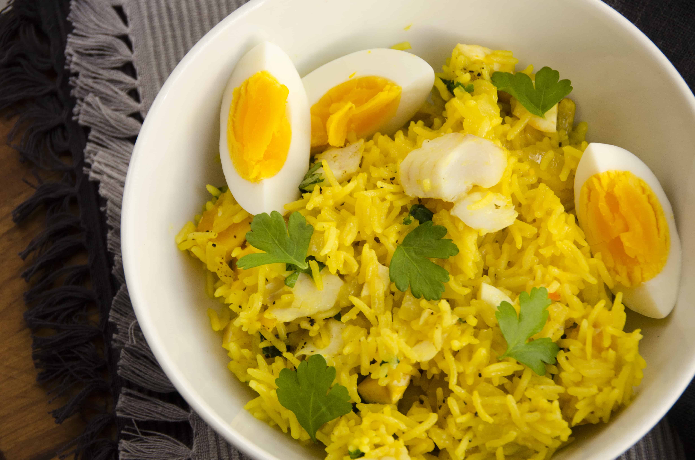

Smoked Fish Kedgeree
Ingredients
- 175g (6oz) long grain brown rice
- Salt and freshly ground pepper
- 275g (10oz) smoked haddock
- 25g (1oz) margarine or butter
- 1 hard-boiled egg, chopped
- 30ml (2tbsp) chopped fresh parsley
- juice of 1⁄2 lemon
Steps
- Place the rice in a large saucepan of boiling salted water and cook for about 35 minutes or according to packet instructions until tender.
- Meanwhile, place the haddock in a pan, cover with water and poach for about 15 minutes.
- Drain the fish well, then flake the fish, discarding the skin and bones.
- Drain the rice well. Melt the margarine in a frying pan, add the rice, haddock, egg, and parsley and stir over moderate heat for a few minutes until warmed through. Add the lemon juice and seasoning to taste, turn into a warmed serving dish and serve immediately.